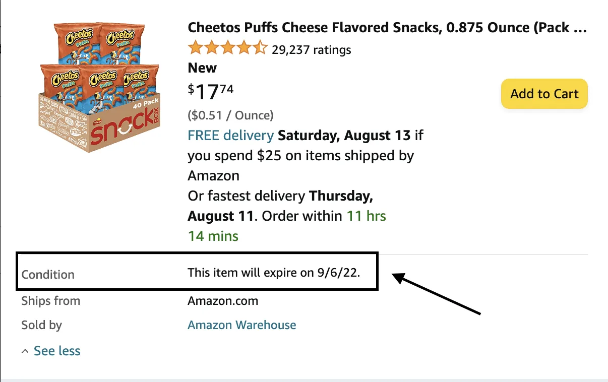

Never Pay Full Price Again With Amazon Warehouse Deals
When you buy an item using one of our links, we may earn a portion of the sale. WalletsWinners and some products featured on the site are owned by the same company. Learn more.
Ever hear the expression, “one person’s trash is another person’s treasure”? Well, with Amazon Warehouse Deals, one person’s treasure is another person’s treasure for BIG discounts. In our money-saving nature, we thought it was important to explain since you can get brand new items for way below retail prices.
What Is Amazon Warehouse Deals?
We’ve all done it. You ordered something, it ships, and then you have an epiphany that you messed up and don’t need it. So what do you do? Return it. Amazon makes returns easy, but what happens after you return an item on Amazon?
Instead of Amazon tossing returned or used items, they created Amazon Warehouse Deals. This part of Amazon is entirely focused on items that have been used. These items vary in condition from “Used – Like New” to “Used – Acceptable” and everything in between. Amazon Warehouse is really a win-win situation. Amazon gets to sell their used inventory and you get to save tons of money.
How To Get Amazon Warehouse Deals?
Glad you asked, there’s no secret code or paywall. Amazon warehouse deals are open to everyone. Simply check out the Amazon warehouse deals site.
See Current Amazon Warehouse DealsCan Amazon Warehouse Deals Be Returned?
Yes, just like full-priced Amazon purchases, you can return Amazon Warehouse deals too. The only caveat is that since the availability of these uniquely used items changes so much, you might not be able to get the same product in the same condition.
Can You Trust The “Condition” Status On Amazon Warehouse Deals?
Yes, you can even assume the item will arrive to you in better shape. Luckily, Amazon is extremely cautious with its grading system. For example, “like new” condition might mean that the box is opened but the actual product was never touched. Amazon Warehouse Deals aren’t something someone used for 2 years and then wanted to sell.
Amazon’s Condition Definitions
- Used – Like New: An item in perfect working condition. Original protective wrapping may be missing, but the original packaging is intact and in good condition with minor damage possible. Instructions are included.
- Used – Very Good: A well-cared-for item that has seen limited use and remains in good working condition. The item may show some limited signs of wear with small scratches or cosmetic blemishes. Item may arrive with damaged packing or be repackage and could be missing some accessories. Missing accessories are clearly defined for each item.
- Used – Good: The item shows wear from consistent use, but it remains in good condition and functions properly. Item may arrive with damaged packaging or be repackaged. It may be marked, have identifying markings on it, or have minor cosmetic damage. It may also be missing some parts/accessories such as screws (in the case of furniture) or instruction manual.
- Used – Acceptable: The item is fairly worn but continues to function properly. Item may arrive with damaged packaging or be repackaged. Signs of wear can include aesthetic issues such as scratches, dents, and worn corners. The item may have identifying markings on it or show other signs of previous use. Item may be missing some parts/accessories such as screws (in the case of furniture) or a mouse or USB cable. (in the case of a laptop.)
What Can You Buy On Amazon Warehouse?
When you think of things being returned and re-available, your mind may go straight to appliances and tools. You’re not wrong. There are lots of items like coffee makers, blenders and cordless drills on Amazon Warehouse.
However, there are also less expected things such as food. Really? So people are returning food and people buy that? Not even close. Instead, when Amazon’s grocery business has food that is nearing expiration date, they add it to Amazon Warehouse at a discount. Rest assure that instead of getting someone’s used avocado (gross), you could actually be getting some fruit snacks for 25% off that expire in 2 months. Not so bad after all, eh?
In this example, this 40 pack of Cheetos Puffs was 24% off and expired in roughly 1 month. If these are your favorite snack or you’ve got kid’s lunches to make, this may up saving you money. However, always check the “condition” box for food items as you need to make sure they won’t expire before you enjoy them.
Amazon Warehouse Electronics
Our two favorite items on Amazon warehouse are AirPods and Roombas. We often see Roombas for $100 that retail for well over $200. Additionally, we find AirPod Pros under $125 that retail for $250 from Apple.
Pro Tip: Try To Activate The Warranty
If you’re purchasing something like an appliance, you should check and try to activate the warranty. Most of these Amazon Warehouse items are hardly opened, so if you get something with a “like new” or “very good” condition, chances are the previous shopper didn’t even apply the warranty yet.
One More Reason To Use Amazon Warehouse: Sustainability
Not only can you save boatloads of money, but this program is also great for the environment. This is, in our opinion, an under-appreciated aspect. In 2021 alone, more than $761 billion dollars of merchandise was returned. By re-using/selling items, your purchase is helping make sure that a perfectly good product doesn’t end up in a landfill.
How To Save If Item Isn’t On Amazon Warehouse?
Amazon Warehouse Deals are just one of the many ways you can save money on Amazon. Not every product is on Amazon Warehouse Deals and even the ones that are on the platform change constantly.
Therefore, you should look at investing in a Prime membership to save money on shipping and to get exclusive deals on Amazon Prime Day. Another great way to save on things you have to buy anyway is Amazon Subscribe and Save. With Subscribe and Save, you can save up to 15% by buying normal items such as paper towels or hand soap.